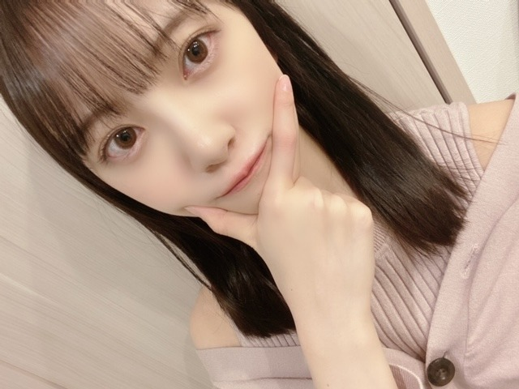

2019/1217Tueもうクリスマスは終わったと思っていましたがこれからなんですね
こんばんは〜
明治エッセルスーパーカップsweets アフォガート
のCMに出させていただいています☺︎
甘くて苦い味が癖になるので
ちょっとした休憩や、食後、お風呂上がりにぴったりです！ぜひぜひ

最近身体が重くて、
炭水化物を減らして
簡単ダイエットを始めました☺︎
身体のために頑張ります！
最近あったほっこり話し。
一人でご飯屋さんに行って、注文しようと
すみませんと言ったのですが声が通らず困っていたら
近くのテーブルの方が呼び出しボタンを押して
お水を頼んでくださり
それで、あ。呼び出しボタンがあるんだ！と知って
無事解決したのですが、たまたまだったとしても
困っていたあのタイミングでお水を頼んでくださったことで凄く助かりまして...
そんな優しさに触れてなにも言わずにはいられなくて、
帰り際にありがとうございましたとだけお伝えさせていただきました！
他人だからとか目立ちたくないとかお節介かもって思うんじゃなくて、自分がされて嬉しいことは積極的にやっていかなくちゃですね☺︎

いつめん❤︎
ダンスが上手くてライブだとめちゃくちゃかっこいいけど普段はよくふざけていて変で面白くてツボなみり愛
顔がとにかく整っていて私のことを1番に理解してくれる優しさもありながら突然謎のタイミングではっちゃけだす絢音
犬みたいに元気で楽屋でもずっと何かしら話しているお喋り好きだけど話を聞いてくれたり頼れたり、なにかと信頼してる日奈子
的確なアドバイスをいつもしてくれるし何でも笑ってくれて歳下だけど初期からずっと甘えさせてくれる純奈
気づいたらいつも一緒で、落ち着きます☺︎
たくさん思い出作りたいなぁ好きだなぁ
田中みな実さんと新木優子さんの写真集を、書店に買いに行きました〜
嬉しい〜
尊敬する美しいお2人...
女子力高めて寝ます...
では！おやすみなさい。
2019/12/17 20:18
コメント(307)
未央ちゃんブログ更新ありがとう。
今夜勤終わってコメント書きます。
エッセルスーパーカップ早速買ったよ、後で食べてみます。
今日もかわいい画像ありがとう。
堀ちゃんぜんぜんダイエット必要無いと思うけどやるなら応援するよ。
炭水化物ダイエットならパン、白米様は控えめにだね。
ご飯屋さんでお水を頼んだのオレです。嘘です(笑)
世の中やさしい人がいるもんだね。
ちゃんとお礼を言える堀ちゃん、すばらしいと思います。
仲良し2期生見るとほっこりしますね。
頑張ってる2期生応援してるよ。
これからもっといい思いで作れると思うよ。
では
バーイ。
今夜勤終わってコメント書きます。
エッセルスーパーカップ早速買ったよ、後で食べてみます。
今日もかわいい画像ありがとう。
堀ちゃんぜんぜんダイエット必要無いと思うけどやるなら応援するよ。
炭水化物ダイエットならパン、白米様は控えめにだね。
ご飯屋さんでお水を頼んだのオレです。嘘です(笑)
世の中やさしい人がいるもんだね。
ちゃんとお礼を言える堀ちゃん、すばらしいと思います。
仲良し2期生見るとほっこりしますね。
頑張ってる2期生応援してるよ。
これからもっといい思いで作れると思うよ。
では
バーイ。
明治エッセルスーパーカップのＣＭ堀ちゃん可愛すぎて
とても癒させたよ！
今度買って食べるね！
やっぱ、2期生大好き、堀ちゃんも大好き
ブログ更新ありがとう☺️
とても癒させたよ！
今度買って食べるね！
やっぱ、2期生大好き、堀ちゃんも大好き
ブログ更新ありがとう☺️
未央奈ちゃん!
ブログ更新ありがとう！
今のままでも充分かわいいのに更に美を追求するところは、偉いです!
これから、クリスマスとお正月そして2月のライブとで体調管理が大変ですね！
あまり無理しないでね！
応援しています☺️☺️
ブログ更新ありがとう！
今のままでも充分かわいいのに更に美を追求するところは、偉いです!
これから、クリスマスとお正月そして2月のライブとで体調管理が大変ですね！
あまり無理しないでね！
応援しています☺️☺️
堀さん、おはようございます。
冬至の季節は日がどんどん短くなって、なかなか朝日が昇らず夕陽は釣瓶落とし。でもクリスマスの頃を堺に少しずつ日が伸びてくる。まさにクリスマスは再生のお祭りでもあるのです。もうすぐクリスマス。楽しみましょう。
いつめん二期生五人組の写真、ありがとうございます。各メンバーの説明文の冒頭読むだけで誰のことかすぐわかる僕って、なかなかの乃木坂46愛だと思いません？（笑）
写真集といえば、昨日は『乃木撮2』の発売日！ 僕は予約注文していた口なので、まさに今日届く予定です。楽しみだなあ。
ではまたコメント寄せます。週の真ん中もがんばりましょう。
さらばだ、また会おう！（気球に乗って去りぬ〜）
冬至の季節は日がどんどん短くなって、なかなか朝日が昇らず夕陽は釣瓶落とし。でもクリスマスの頃を堺に少しずつ日が伸びてくる。まさにクリスマスは再生のお祭りでもあるのです。もうすぐクリスマス。楽しみましょう。
いつめん二期生五人組の写真、ありがとうございます。各メンバーの説明文の冒頭読むだけで誰のことかすぐわかる僕って、なかなかの乃木坂46愛だと思いません？（笑）
写真集といえば、昨日は『乃木撮2』の発売日！ 僕は予約注文していた口なので、まさに今日届く予定です。楽しみだなあ。
ではまたコメント寄せます。週の真ん中もがんばりましょう。
さらばだ、また会おう！（気球に乗って去りぬ〜）
かわいい!
未央奈ちゃんおはようございます‼頑張ります‼今日もレコメン頑張ります‼頑張って下さい！ありがとうございます‼気をつけて下さい！ありがとうございます
堀ちゃん！更新ありがとう！
1週間後ですね…
クリスマスまでは…笑
寒さ的にはお正月くらいだけどね
堀ちゃん…
ほっこり話最高です！！笑
天然の堀ちゃんならではの
話の内容で、すぐに想像出来ました笑
いつメンの写真も最高！！
次回の更新も
楽しみにしてるよ～！！
では！
1週間後ですね…
クリスマスまでは…笑
寒さ的にはお正月くらいだけどね
堀ちゃん…
ほっこり話最高です！！笑
天然の堀ちゃんならではの
話の内容で、すぐに想像出来ました笑
いつメンの写真も最高！！
次回の更新も
楽しみにしてるよ～！！
では！
未央にゃブログ更新有難う
ブログ更新ありがとう！
スーパーカップのCM見たよ～
大人っぽくて綺麗
何かあったのかな？
無理せず頑張ろ～☺️
スーパーカップのCM見たよ～
大人っぽくて綺麗
何かあったのかな？
無理せず頑張ろ～☺️
クリスマスはこれから！
可愛すぎてみおちゃんからいつも沢山の幸せもらってますありがとう☺︎本当に可愛い
堀さんはまじで神です!
未央奈、おはよう
女子力高いよ‼️
写真集楽しみにしてます‼️
本当に綺麗だよ
女子力高いよ‼️
写真集楽しみにしてます‼️
本当に綺麗だよ
未央奈ちゃん更新ありがとー！
ダイエット自分もしてるよー。
お互い体調には気をつけて あまり無理はせず
ほどほどに頑張っていこーね！
継続は力なりー。
ほっこり話良き！
優しさってすごく大切だよね。
他の人を思いやる気持ち 自分も積極的に持っていこう！
いつめん めっちゃ楽しそう！
いつかは混ざりたいものです。
(無理なのはわかってます。)
やっぱ二期生好きだわー ( ≧∀≦)ノ
ではは～
ダイエット自分もしてるよー。
お互い体調には気をつけて あまり無理はせず
ほどほどに頑張っていこーね！
継続は力なりー。
ほっこり話良き！
優しさってすごく大切だよね。
他の人を思いやる気持ち 自分も積極的に持っていこう！
いつめん めっちゃ楽しそう！
いつかは混ざりたいものです。
(無理なのはわかってます。)
やっぱ二期生好きだわー ( ≧∀≦)ノ
ではは～
みおなちゃん、おはようございます。
明治エッセルスーパーカップsweets アフォガート、僕は買って食べたよ。めっちゃおいしかったです。
CMも見たよ。みおなちゃん、めっちゃ綺麗で、めっちゃかわいかったです。
田中みな実さんの写真集、話題になってますよね。
田中みな実さん、綺麗な人ですよね。もちろん、みおなちゃんも綺麗で女子力も高いですよ。
１枚目の写メのみおなちゃん、めっちゃかわいいです。
みおなちゃん、体調に気をつけて仕事頑張ってね。
またコメントするね。
明治エッセルスーパーカップsweets アフォガート、僕は買って食べたよ。めっちゃおいしかったです。
CMも見たよ。みおなちゃん、めっちゃ綺麗で、めっちゃかわいかったです。
田中みな実さんの写真集、話題になってますよね。
田中みな実さん、綺麗な人ですよね。もちろん、みおなちゃんも綺麗で女子力も高いですよ。
１枚目の写メのみおなちゃん、めっちゃかわいいです。
みおなちゃん、体調に気をつけて仕事頑張ってね。
またコメントするね。
ほっこりする話ありがとう！
2期生仲良くてホントに良い関係だね！！
未央奈の写真集も楽しみだよ〜
2期生仲良くてホントに良い関係だね！！
未央奈の写真集も楽しみだよ〜
こんにちは〜
、、今日は、、よく晴れそうだね〜
、、写真、、メンバー、、みんな、、太眉〜ふとまゆ、、（笑）だね〜
、、今年の、、流行かな〜
、、きっと、、トナカイと、、サンタも、、ふとまゆで、、（笑）、、来てくれるね〜（笑）
、、じゃあ、、またね〜
、、今日は、、よく晴れそうだね〜
、、写真、、メンバー、、みんな、、太眉〜ふとまゆ、、（笑）だね〜
、、今年の、、流行かな〜
、、きっと、、トナカイと、、サンタも、、ふとまゆで、、（笑）、、来てくれるね〜（笑）
、、じゃあ、、またね〜
おはようございます‼︎
ブログ更新、ありがとうございます♪
堀北コンビの珍道中(笑)、とりあえずDAYS 1まで観ましたよ‼︎
まず最初に思った感想は…
堀北コンビ、とにかく可愛かった‼︎
遠い南の島まで行ったのにそんな感想かよって思うかもしれないけど(笑)、まあ、とにかく可愛かったんです♪
南の島特有の開放的な雰囲気と、堀北コンビの楽しげな笑顔。
う〜ん、絵になりますね♪
また、スタッフさんが少し離れた場所から撮影していて、本当に二人で旅しているような感じがいいですね‼︎
自分はもともと旅番組が大好きで。
観てると自分もそこにいるような気持ちになって、自分だったらどうするかなあとか、あれこれ想像するのが好きなんです♪
見ず知らずの人に話しかけられたりとか(笑)、二人で協力してなんとかコミュニケーション取ったりとか、ちょっとしたトラブルも含めて、『乃木坂世界旅』はリアリティがあっていいですね‼︎
まず1日目、マルシェの朝市とお買い物からスタートするところが、女子旅っぽくてよかった♪
ちなみに、マルシェはフランス語、マーケットは英語です。
ドイツ語だとマルクト。
ヨーロッパ圏の言葉って、どれもどこか似てますよね♪
そうそう、ヨーロッパといえば…
野菜やシーフードは日本の方が新鮮で美味しいものが多い気がするけど、チーズやバターの乳製品と、ハムやソーセージなどの燻製のお肉は、ヨーロッパの方が種類も多くて美味しかった記憶があります♪
そう考えると、フランス領ニューカレドニアで食べるクロックムッシュは、無敵ですね‼︎
想像するだけで美味しい♪
カフェオレボウルもとっても美味しそうだった…‼︎
なんだろう、日本とはミルクの種類が違うのかなあ？
なんかミルクの味が濃い気がしますよね♪
ああ、初日の午前中だけでこんなに長くなってしまった(苦笑)。
続きはまた書きますね‼︎
ではでは、また。
今日も未央奈にとっていい1日になりますように♪
ブログ更新、ありがとうございます♪
堀北コンビの珍道中(笑)、とりあえずDAYS 1まで観ましたよ‼︎
まず最初に思った感想は…
堀北コンビ、とにかく可愛かった‼︎
遠い南の島まで行ったのにそんな感想かよって思うかもしれないけど(笑)、まあ、とにかく可愛かったんです♪
南の島特有の開放的な雰囲気と、堀北コンビの楽しげな笑顔。
う〜ん、絵になりますね♪
また、スタッフさんが少し離れた場所から撮影していて、本当に二人で旅しているような感じがいいですね‼︎
自分はもともと旅番組が大好きで。
観てると自分もそこにいるような気持ちになって、自分だったらどうするかなあとか、あれこれ想像するのが好きなんです♪
見ず知らずの人に話しかけられたりとか(笑)、二人で協力してなんとかコミュニケーション取ったりとか、ちょっとしたトラブルも含めて、『乃木坂世界旅』はリアリティがあっていいですね‼︎
まず1日目、マルシェの朝市とお買い物からスタートするところが、女子旅っぽくてよかった♪
ちなみに、マルシェはフランス語、マーケットは英語です。
ドイツ語だとマルクト。
ヨーロッパ圏の言葉って、どれもどこか似てますよね♪
そうそう、ヨーロッパといえば…
野菜やシーフードは日本の方が新鮮で美味しいものが多い気がするけど、チーズやバターの乳製品と、ハムやソーセージなどの燻製のお肉は、ヨーロッパの方が種類も多くて美味しかった記憶があります♪
そう考えると、フランス領ニューカレドニアで食べるクロックムッシュは、無敵ですね‼︎
想像するだけで美味しい♪
カフェオレボウルもとっても美味しそうだった…‼︎
なんだろう、日本とはミルクの種類が違うのかなあ？
なんかミルクの味が濃い気がしますよね♪
ああ、初日の午前中だけでこんなに長くなってしまった(苦笑)。
続きはまた書きますね‼︎
ではでは、また。
今日も未央奈にとっていい1日になりますように♪
ブログ更新ありがとう！スーパーカップ食べます！
2期生最高！！年末も大変だけど頑張ろう！
2期生最高！！年末も大変だけど頑張ろう！
みおな
未央奈さんクリスマスは何をされますか？
自分はいつもどおり、仕事をしています。
これからも頑張ってください。
自分はいつもどおり、仕事をしています。
これからも頑張ってください。
未央奈さんブログ更新ありがとうございます。何時も忙しいのにメールありがとう ✨。２期生は仲良し だって良いことです。未央奈さん呼び出しボタンに気付いて良かったですね。CMも楽しみにしてます。未央奈さんは優しいから友達が多いと思うよ。大切にして下さい。何時も未央奈さんのメールで癒されます。年末忙しいと思うけど無理しないで睡眠はちゃんととることです。またコメントします。
未央奈ちゃんありがとうございます‼楽しみにしてます！頑張ります‼頑張って下さい！ありがとうございます‼気をつけて下さい。
好きだよ！
やほー。
このメンバーって、塩アイスとプリン会じゃん。
この五人が揃って表題曲のメンバーになって欲しいですね。
ところで、写真だと未央奈のぷにぷにほっぺが、細くなっているように見えるけど、ダイエットするの？
寒い時期だけに無理しないでとしか言いようが無いけど、意識がたかいね。プロの鑑ですね。
次の全握は、頑張ってまとめだししたいですね。
でははは。
このメンバーって、塩アイスとプリン会じゃん。
この五人が揃って表題曲のメンバーになって欲しいですね。
ところで、写真だと未央奈のぷにぷにほっぺが、細くなっているように見えるけど、ダイエットするの？
寒い時期だけに無理しないでとしか言いようが無いけど、意識がたかいね。プロの鑑ですね。
次の全握は、頑張ってまとめだししたいですね。
でははは。
昨日ジム帰りに見つけてさっそく買いました(*´ω｀*)うまかった(*´ω｀*)
けっこう前から運動でどれくらいというかどう痩せるかなぁってやってて
最初はエアロバイク のみで700kカロリーとかやってたけど
のみで700kカロリーとかやってたけど
降りた瞬間足つってベッド直行したり次の日の朝ベッドから降りる時に
生まれたての小鹿のように筋肉痛で足がふるふるになったりで
そこでスイッチのフィットボクシングというゲームを併用して昨日で139日継続中
エアロバイクはアマゾンタブレット見ながらやっていてそこで世界旅見てて助かってる～
可愛さ面白さで運動してる感はもはやゼロ
ゲーム337、世界旅1d-1 505
ゲーム397、世界旅1d-2,3 550
ゲーム375、世界旅1d-3,4 510
二日目なんか計1000弱…気付いたらいっててまた小鹿状態になるかなと
ガクブルだったけどなんとか無事でしたとさ笑
調べたところ摂食も有酸素運動もカロリーで両方の肉が減ってくイメージみたいで
つまりはぜい肉筋肉両方って事なので運動プラスたんぱく多めで筋肉減を相殺
できるといいのかなあと
あとダイエット後に無酸素運動…いわゆる筋トレで相殺もありなのかなあ…
こっちはカロリー自体はそんなに稼げないしダイエット前後にやる感じなのかな
今のところ足の筋肉痛が治る日はほぼないから大丈夫そう
昼間に力こぶ作って見てるのはナルシスト的なのでなくて実は
「ここに付くんでなくて足の痛み取れないかなあ…」と思ってるのですと
こんなところで言い訳してみる
筋肉痛治らないかなとプロテイン飲んでもなぜか全部そっちにいってる感
まあ男だからいいんだけどさ…有酸素運動で目指せ細マッチョなんだけど難しい笑
最初はエアロバイク
降りた瞬間足つってベッド直行したり次の日の朝ベッドから降りる時に
生まれたての小鹿のように筋肉痛で足がふるふるになったりで
そこでスイッチのフィットボクシングというゲームを併用して昨日で139日継続中
エアロバイクはアマゾンタブレット見ながらやっていてそこで世界旅見てて助かってる～
可愛さ面白さで運動してる感はもはやゼロ
ゲーム337、世界旅1d-1 505
ゲーム397、世界旅1d-2,3 550
ゲーム375、世界旅1d-3,4 510
二日目なんか計1000弱…気付いたらいっててまた小鹿状態になるかなと
ガクブルだったけどなんとか無事でしたとさ笑
調べたところ摂食も有酸素運動もカロリーで両方の肉が減ってくイメージみたいで
つまりはぜい肉筋肉両方って事なので運動プラスたんぱく多めで筋肉減を相殺
できるといいのかなあと
あとダイエット後に無酸素運動…いわゆる筋トレで相殺もありなのかなあ…
こっちはカロリー自体はそんなに稼げないしダイエット前後にやる感じなのかな
今のところ足の筋肉痛が治る日はほぼないから大丈夫そう
昼間に力こぶ作って見てるのはナルシスト的なのでなくて実は
「ここに付くんでなくて足の痛み取れないかなあ…」と思ってるのですと
こんなところで言い訳してみる
筋肉痛治らないかなとプロテイン飲んでもなぜか全部そっちにいってる感
まあ男だからいいんだけどさ…有酸素運動で目指せ細マッチョなんだけど難しい笑
朝からロケ頑張って！
寒くなったり暖かくなったりしている最近でも
あるからこそロケ中でも体調には充分気をつけて！
寒くなったり暖かくなったりしている最近でも
あるからこそロケ中でも体調には充分気をつけて！
堀ちゃんにいつも元気もらってるよ！
寒い時期でも、不思議と食べたくなるアイス♪♪ ほっこり←人が嬉しく思うことを自然と出来る人って素敵だよねぇ(^_^) 田中みな実さん&新木優子さんも確かに美人さんだけど、個人的には堀ちゃんの方がより綺麗だと思う!!!(〃∇〃)
こんにちは！
久しぶりのコメントm(_ _)m
じゃあ私も封印してたほっこり話を！
(封印してた訳でもない笑)
あれは今年の3月21日だったかな...
名古屋全握に向かう地下鉄の電車内で
私が座席に座っていたら、
おばあさんが乗って来たので私は席を譲りました。
しばらくして、
おばあさんの座席の隣りが空きました。
そしたら、おばあさんがその空いた座席に
どうぞ座って、と言って下さったので
私はご好意に甘えて遠慮なく座らせて頂きました。
そして、またしばらくして、
おばあさんが私が降りる目的の名古屋駅よりも
手前の駅で降りられるその際に
ありがとうございました、と頭を下げて
お礼を言って下さいました。
とっても嬉しかったです！
今までで座席を譲った中でも1番嬉しかった。
空いた座席に座らせて頂けたこと。
言われたことがなかった去り際のお礼。
譲ってから時間が経ってたのに...
未央奈さんが書いた、
自分がされて嬉しいことは積極的に...
同感です。
相手に対する感謝の言葉も大切ですね！
たくさん言われて嫌な人はいない言葉。
言われたこっちも清々しい気持ちになれる☺︎
いつメンのみり愛さん、絢音さん、
日奈子さん、純奈さんの事、
詳しく教えてくれてありがとう！
礼儀正しい女性、私は好きです☺︎❤︎
久しぶりのコメントm(_ _)m
じゃあ私も封印してたほっこり話を！
(封印してた訳でもない笑)
あれは今年の3月21日だったかな...
名古屋全握に向かう地下鉄の電車内で
私が座席に座っていたら、
おばあさんが乗って来たので私は席を譲りました。
しばらくして、
おばあさんの座席の隣りが空きました。
そしたら、おばあさんがその空いた座席に
どうぞ座って、と言って下さったので
私はご好意に甘えて遠慮なく座らせて頂きました。
そして、またしばらくして、
おばあさんが私が降りる目的の名古屋駅よりも
手前の駅で降りられるその際に
ありがとうございました、と頭を下げて
お礼を言って下さいました。
とっても嬉しかったです！
今までで座席を譲った中でも1番嬉しかった。
空いた座席に座らせて頂けたこと。
言われたことがなかった去り際のお礼。
譲ってから時間が経ってたのに...
未央奈さんが書いた、
自分がされて嬉しいことは積極的に...
同感です。
相手に対する感謝の言葉も大切ですね！
たくさん言われて嫌な人はいない言葉。
言われたこっちも清々しい気持ちになれる☺︎
いつメンのみり愛さん、絢音さん、
日奈子さん、純奈さんの事、
詳しく教えてくれてありがとう！
礼儀正しい女性、私は好きです☺︎❤︎
重い？どこが？
僕も声通りにくいんだよね。
普段より何トーンもあげないと
あと子供のとき親の転勤で転々としてたせいもあるのかな？
地元の人同士がボソボソしゃべってると何言ってるか分からなかったりすることがよくあります。
でも、僕が結構声張っても
えっ？て聞き返されたり
人と話すって難しいです。
自分のことばかりになってごめんなさい。
あと一つだけ～
受けてた資格試験受かりました！
みんなが頑張ってる姿いっぱい見てるし、僕もこれからも頑張らなきゃなー！
体に気をつけてね！
これからも応援してます！
写真集も楽しみにしてます！
僕も声通りにくいんだよね。
普段より何トーンもあげないと
あと子供のとき親の転勤で転々としてたせいもあるのかな？
地元の人同士がボソボソしゃべってると何言ってるか分からなかったりすることがよくあります。
でも、僕が結構声張っても
えっ？て聞き返されたり
人と話すって難しいです。
自分のことばかりになってごめんなさい。
あと一つだけ～
受けてた資格試験受かりました！
みんなが頑張ってる姿いっぱい見てるし、僕もこれからも頑張らなきゃなー！
体に気をつけてね！
これからも応援してます！
写真集も楽しみにしてます！
未央奈さん 可愛い過ぎです
可愛い過ぎです
特に最後の写真は待ち受けにしまーす
好き過ぎる
未央奈さんの二期生の事を語るモバメやブログ、雑誌のインタビュー記事なんかを読む度に、未央奈さんの事が好きになるし二期生の事が好きになるなぁ
ホンマに未央奈さんを好きになって良かったなぁ～未央奈さんを応援し初めて今年で6年。7年目も気合い入れて応援しますねぇ～
未央奈さん！大好きやぁ～
特に最後の写真は待ち受けにしまーす
好き過ぎる
未央奈さんの二期生の事を語るモバメやブログ、雑誌のインタビュー記事なんかを読む度に、未央奈さんの事が好きになるし二期生の事が好きになるなぁ
ホンマに未央奈さんを好きになって良かったなぁ～
未央奈さん！大好きやぁ～
塩プリンアイス！
応援してます！
応援してます！
まだまだ、、
スーパーカップ、今度買ってみまーーーす
ダイエットはほどほどにしとかんと
ガリガリになったら雰囲気老け込むよ
風邪などに気をつけて(;´д｀)
未央奈さん、こんにちは
スーパーカップsweetsアフォガート
要チェックですね！
甘いもの好きなので
食べてみます(^_^)
こころ温まるお話
ありがとうございます
自分がされて嬉しいこと
進んで出来るようになりたいものです
身にしみますm(__)m
二期生の写真
解説つきで嬉しいです
ほんと仲良いいですね(^_^)
年末に向けて楽しみましょ
応援しています！
スーパーカップsweetsアフォガート
要チェックですね！
甘いもの好きなので
食べてみます(^_^)
こころ温まるお話
ありがとうございます
自分がされて嬉しいこと
進んで出来るようになりたいものです
身にしみますm(__)m
二期生の写真
解説つきで嬉しいです
ほんと仲良いいですね(^_^)
年末に向けて楽しみましょ
応援しています！
堀ちゃんほっこりする話しをありがとう！確かに、自分がされて嬉しい事は積極的にしたいものだね
未央奈ちゃん、こんにちは。
ブログ更新ありがとう、嬉しいです。
未央奈ちゃんが可愛くてかわいくてカワイイです。
二人を研究して、お姉さんの女子力を高めてくださいね。期待しています‼
忙しいのが続くでしょうが、良い体調で過ごしてくださいね。
乃木坂46と頑張ってるcuteでsmartな未央奈ちゃんを応援しています。
ブログ更新ありがとう、嬉しいです。
未央奈ちゃんが可愛くてかわいくてカワイイです。
二人を研究して、お姉さんの女子力を高めてくださいね。期待しています‼
忙しいのが続くでしょうが、良い体調で過ごしてくださいね。
乃木坂46と頑張ってるcuteでsmartな未央奈ちゃんを応援しています。
ブログ更新本当にありがとう(*^-^*)ダイエットしなくても大丈夫な気がΣ(ﾟﾛﾟ;)それと何でこんなに可愛いんだろ？スーパーカップのシリーズ全部食べてるよ笑新しいのももちろん食べる☆〃乃木撮2買ったよ(*･∀･*)最高すぎた☆2期生の写真も最高ですﾟ.+:｡∩(・ω・)∩ﾟ.+:｡マジでずっと未央奈大好き☆〃これからも頑張ってね(=ﾟωﾟ)ﾉ
クリスマスはこれからですね笑
すでにプレゼントをあげたか、もらったから
終わった感覚だったのでは？！
スーパーカップ最近は食べてないです。
さっそく食べてみますね。
マイブームは丸永製菓さん【焼き おいも もなか】です！
身体が重たいのは体重もありますが、鉄分などが不足している可能性もありますね。
年の瀬を駆け抜けれるよう、応援してます！
ほっこり良い話ですね。
一人のときに遭遇すると、特に沁みますね。
いつめん→いつものメンバーですよね？？
いつつ(5人)のメンバーだと思ってしまった笑
新木優子さんの写真集、買うか迷ってます。
綺麗ですよね。
すでにプレゼントをあげたか、もらったから
終わった感覚だったのでは？！
スーパーカップ最近は食べてないです。
さっそく食べてみますね。
マイブームは丸永製菓さん【焼き おいも もなか】です！
身体が重たいのは体重もありますが、鉄分などが不足している可能性もありますね。
年の瀬を駆け抜けれるよう、応援してます！
ほっこり良い話ですね。
一人のときに遭遇すると、特に沁みますね。
いつめん→いつものメンバーですよね？？
いつつ(5人)のメンバーだと思ってしまった笑
新木優子さんの写真集、買うか迷ってます。
綺麗ですよね。
かわいいです(*´ω｀*)
そんなにダイエットしなくていいんじゃないかな。
ありがとうをちゃんと伝えるって大事だよね
いつも元気をくれてありがとう！
いつも元気をくれてありがとう！
未央奈ちゃん。ブログ更新ありがとう！アイスクリーム スーパーカップ お風呂上りに食べると凄く美味しいし、身体の火照りも取れます。夏は特に 最高！ですネ。最後の写真の画像可愛いです。未央奈の「チャームポイントクリクリとしたお目目すごくいいです。」
みーおなっ！♪
押しボタンの話は良い話だね！そんな話をされたら、僕はここで懺悔しないとなりません。だってこの前、乗合バスで降車ボタンを押したがっていた子供より先にボタンを押しちゃったんだ！さーせんでした！みおなの出るラジオのリスナーにはこんな人は居ないですよね！
あっ今日はレコメンですね！聞きま................じゃこの辺で、
押しボタンの話は良い話だね！そんな話をされたら、僕はここで懺悔しないとなりません。だってこの前、乗合バスで降車ボタンを押したがっていた子供より先にボタンを押しちゃったんだ！さーせんでした！みおなの出るラジオのリスナーにはこんな人は居ないですよね！
あっ今日はレコメンですね！聞きま................じゃこの辺で、
未央奈ちゃんブログありがとう！
スーパーカップめちゃくちゃ好きなんですよ！
僕は王道なんですけど、バニラが1番好きですね(^_^*)
アフォガート食べて見ますね！
2期生はやっぱいいですね！みんな仲良さそうで羨ましいです(^^)
2期生みんな好きです！ずっと応援してます！
クリスマスはこれからですよ！笑
未央奈ちゃんは誰と過ごすのかな？素敵なクリスマスになりますように(^.^)
スーパーカップめちゃくちゃ好きなんですよ！
僕は王道なんですけど、バニラが1番好きですね(^_^*)
アフォガート食べて見ますね！
2期生はやっぱいいですね！みんな仲良さそうで羨ましいです(^^)
2期生みんな好きです！ずっと応援してます！
クリスマスはこれからですよ！笑
未央奈ちゃんは誰と過ごすのかな？素敵なクリスマスになりますように(^.^)
クリスマスの過ごし方を教えて下さい！
なんか少ししんみりした日記だけど、
みおなちゃんがどんな立場であっても応援するから！
田中みな実も新木優子も可愛いけど、
俺的にはみおなちゃんのが美白で100倍可愛い！
みおなちゃんがどんな立場であっても応援するから！
田中みな実も新木優子も可愛いけど、
俺的にはみおなちゃんのが美白で100倍可愛い！
風邪引かないように
栄養もつけてね
バスラであえたらうれしいな～
栄養もつけてね
バスラであえたらうれしいな～


ほっこり話素敵です✨✨